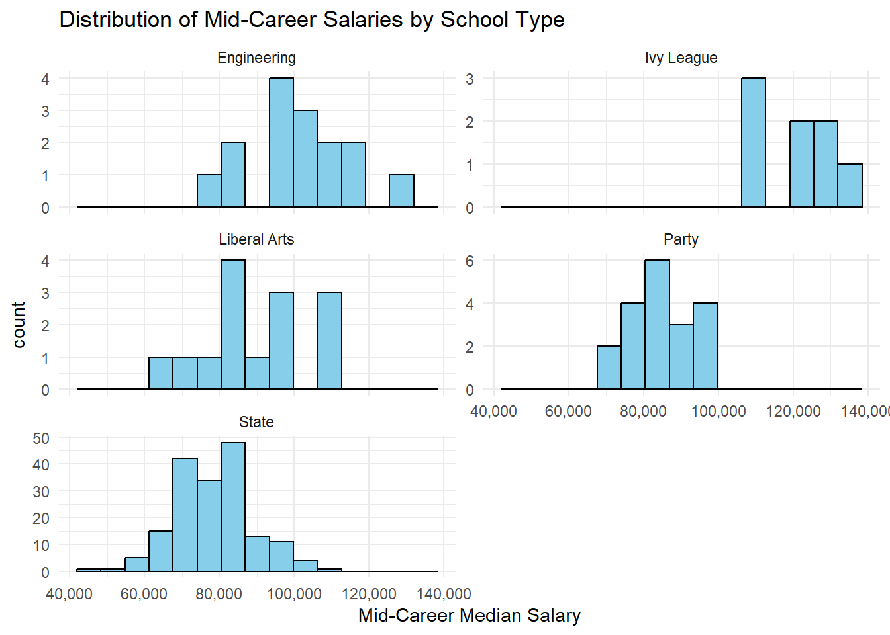
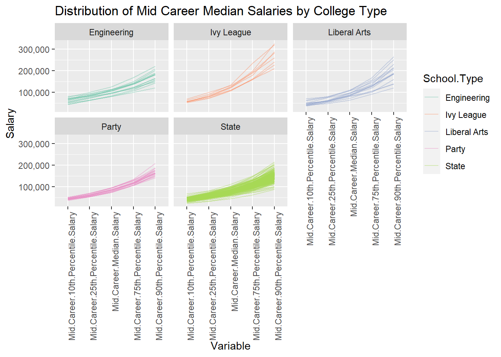

Code
degrees <- read.csv("data//cleaned_data//degrees-that-pay-back-cleaned.csv")
salaries_col <- read.csv("data//cleaned_data//salaries-by-college-type-cleaned.csv")
salaries_reg <- read.csv("data//cleaned_data//salaries-by-region-cleaned.csv")Welcome to a journey through the diverse landscape of colleges, majors, and career trajectories. In this data-driven exploration, we aim to uncover patterns, disparities, and intriguing insights that shape the post-graduation landscape.
degrees <- read.csv("data//cleaned_data//degrees-that-pay-back-cleaned.csv")
salaries_col <- read.csv("data//cleaned_data//salaries-by-college-type-cleaned.csv")
salaries_reg <- read.csv("data//cleaned_data//salaries-by-region-cleaned.csv")The first brushstroke on our canvas reveals a varied tapestry of colleges. Regions and college types each contribute their unique hues, creating a rich mosaic of educational institutions.
library(ggpubr)Warning: package 'ggpubr' was built under R version 4.2.3Loading required package: ggplot2Warning: package 'ggplot2' was built under R version 4.2.3# DISTRIBUTION BY SCHOOL TYPE
school_counts <- table(salaries_col$School.Type)
# Creating a data frame from the counts
count_df <- data.frame(School.Type = names(school_counts), Count = as.numeric(school_counts))
# Creating a bar chart
p1 <- ggplot(count_df, aes(x = School.Type, y = Count)) +
geom_bar(stat = "identity", fill = "skyblue", color = "black") +
labs(title = "Number of Colleges by School Type",
x = "School Type",
y = "Number of Colleges") +
theme_minimal() +
theme(axis.text.x = element_text(angle = 30, hjust = 1))
# DISTRIBUTION BY REGION
region_counts <- table(salaries_reg$Region)
# Creating a data frame from the counts
count_df <- data.frame(Region = names(region_counts), Count = as.numeric(region_counts))
# Creating a bar chart
p2 <- ggplot(count_df, aes(x = Region, y = Count)) +
geom_bar(stat = "identity", fill = "skyblue", color = "black") +
labs(title = "Number of Colleges by Region",
x = "Region",
y = "Number of Colleges") +
theme_minimal() + theme(axis.text.x = element_text(angle = 30, hjust = 1))
# Plotting the two graphs
ggarrange(p1, p2, ncol = 2)
As we dive deeper, we discover that the financial contours of a career post-college are not uniform. Mid-career salaries vary significantly across regions and college types, unveiling economic landscapes shaped by education.
library(scales)Warning: package 'scales' was built under R version 4.2.3salaries_reg %>%
ggplot(aes(x = `Mid.Career.Median.Salary`)) +
facet_wrap(~`Region`, ncol = 2) +
geom_histogram(bins = 15) +
labs(
title = "Distribution of Mid-Career Salaries by Region",
x = "Mid-Career Median Salary"
) +
theme(axis.text.x = element_text(angle = 30, hjust = 1)) +
scale_x_continuous(labels = label_comma()) +
theme_minimal()
# Creating overlaid density histograms
ggplot(salaries_reg, aes(x = Mid.Career.Median.Salary, fill = Region)) +
geom_density(alpha = 0.4) +
labs(title = "Distribution of Mid-Career Salaries by Region",
x = "Mid-Career Median Salary",
y = "Density") +
scale_color_brewer(palette = "Set2") + scale_y_continuous(labels = scales::comma_format())
library(tidyverse)Warning: package 'tidyverse' was built under R version 4.2.3Warning: package 'tibble' was built under R version 4.2.3Warning: package 'tidyr' was built under R version 4.2.3Warning: package 'readr' was built under R version 4.2.3Warning: package 'purrr' was built under R version 4.2.3Warning: package 'dplyr' was built under R version 4.2.3Warning: package 'stringr' was built under R version 4.2.3Warning: package 'forcats' was built under R version 4.2.3Warning: package 'lubridate' was built under R version 4.2.3── Attaching core tidyverse packages ──────────────────────── tidyverse 2.0.0 ──
✔ dplyr 1.1.3 ✔ readr 2.1.4
✔ forcats 1.0.0 ✔ stringr 1.5.1
✔ lubridate 1.9.2 ✔ tibble 3.2.1
✔ purrr 1.0.2 ✔ tidyr 1.3.0
── Conflicts ────────────────────────────────────────── tidyverse_conflicts() ──
✖ readr::col_factor() masks scales::col_factor()
✖ purrr::discard() masks scales::discard()
✖ dplyr::filter() masks stats::filter()
✖ dplyr::lag() masks stats::lag()
ℹ Use the conflicted package (<http://conflicted.r-lib.org/>) to force all conflicts to become errorslibrary(scales)
salaries_col %>%
ggplot(aes(x = `Mid.Career.Median.Salary`)) +
facet_wrap(~`School.Type`, scales = "free_y", ncol = 2) +
geom_histogram(bins = 15) +
labs(
title = "Distribution of Mid-Career Salaries by School Type",
x = "Mid-Career Median Salary"
) +
theme(axis.text.x = element_text(angle = 30, hjust = 1)) +
scale_x_continuous(labels = label_comma()) +
theme_minimal()
# Creating overlaid density histograms
ggplot(salaries_col, aes(x = Mid.Career.Median.Salary, fill = School.Type)) +
geom_density(alpha = 0.4) +
labs(title = "Distribution of Mid-Career Salaries by School Type",
x = "Mid-Career Median Salary",
y = "Density") +
scale_color_brewer(palette = "Set3") + scale_y_continuous(labels = scales::comma_format())
Our exploration of majors provides a surprising revelation. The top 10 majors with the highest starting salaries and mid-career salaries might not be what you expect. Could your passion align with a lucrative career?
# | warnings = FALSE
library(tidyverse)
library(ggpubr)
majors = degrees
plot1 <- majors %>%
arrange(desc(`Starting.Median.Salary`)) %>%
top_n(10) %>%
mutate(Rank = row_number()) %>%
ggplot(aes(fill = Undergraduate.Major, y = reorder(Undergraduate.Major, Starting.Median.Salary), x = `Starting.Median.Salary`)) +
geom_col() + xlim(0, 110000) +
labs(title = "Top 10 Majors by Starting Median Salary", x = "Starting Median Salary", y = "Undergraduate Major") +
theme_minimal() + guides(fill = FALSE)Selecting by Mid.Career.90th.Percentile.SalaryWarning: The `<scale>` argument of `guides()` cannot be `FALSE`. Use "none" instead as
of ggplot2 3.3.4.plot2 <- majors %>%
arrange(`Starting.Median.Salary`) %>%
top_n(-10) %>%
mutate(Rank = row_number()) %>%
ggplot(aes(fill = Undergraduate.Major, x = `Starting.Median.Salary`, y = reorder(Undergraduate.Major, Starting.Median.Salary))) +
geom_col() + xlim(0, 110000) +
labs(title = "Bottom 10 Majors by Starting Median Salary", x = "Starting Median Salary", y = "Undergraduate Major") +
theme_classic() + guides(fill = FALSE)Selecting by Mid.Career.90th.Percentile.Salaryggarrange(plot1, plot2, nrow = 2)
# | warnings = FALSE
library(tidyverse)
library(ggpubr)
majors = degrees
plot1 <- majors %>%
arrange(desc(`Mid.Career.Median.Salary`)) %>%
top_n(10) %>%
mutate(Rank = row_number()) %>%
ggplot(aes(fill = Undergraduate.Major, y = reorder(Undergraduate.Major, Mid.Career.Median.Salary), x = `Mid.Career.Median.Salary`)) +
geom_col() + xlim(0, 110000) +
labs(title = "Top 10 Majors by Mid Career Median Salary", x = "Mid Career Median Salary", y = "Undergraduate Major") +
theme_minimal() + guides(fill = FALSE)Selecting by Mid.Career.90th.Percentile.Salaryplot2 <- majors %>%
arrange(`Mid.Career.Median.Salary`) %>%
top_n(-10) %>%
mutate(Rank = row_number()) %>%
ggplot(aes(fill = Undergraduate.Major, x = `Mid.Career.Median.Salary`, y = reorder(Undergraduate.Major, Mid.Career.Median.Salary))) +
geom_col() + xlim(0, 110000) +
labs(title = "Bottom 10 Majors by Mid Career Median Salary", x = "Mid Career Median Salary", y = "Undergraduate Major") +
theme_classic() + guides(fill = FALSE)Selecting by Mid.Career.90th.Percentile.Salaryggarrange(plot1, plot2, nrow = 2)library(tidyverse)
library(ggpubr)
majors = degrees
plot3 <- majors %>%
arrange(desc(`Percent.change.from.Starting.to.Mid.Career.Salary`)) %>%
top_n(10) %>%
mutate(Rank = row_number()) %>%
ggplot(aes(fill = Undergraduate.Major, y = reorder(Undergraduate.Major, Percent.change.from.Starting.to.Mid.Career.Salary), x = `Percent.change.from.Starting.to.Mid.Career.Salary`)) +
geom_col() +
labs(title = "Top 10 Majors by Percent.change.from.Starting.to.Mid.Career.Salary", x = "Percent.change.from.Starting.to.Mid.Career.Salary", y = "Undergraduate Major") +
theme_minimal() + guides(fill = FALSE)Selecting by Mid.Career.90th.Percentile.Salaryplot4 <- majors %>%
arrange(desc(`Percent.change.from.Starting.to.Mid.Career.Salary`)) %>%
top_n(10) %>%
mutate(Rank = row_number()) %>%
ggplot(aes(fill = Undergraduate.Major, y = reorder(Undergraduate.Major, Percent.change.from.Starting.to.Mid.Career.Salary), x = `Mid.Career.Median.Salary`)) +
geom_col() +
labs(title = "Mid Career Median Salary of Top 10 Majors by Percent.change.from.Starting.to.Mid.Career.Salary", x = "Mid Career Median Salary", y = "Undergraduate Major") +
theme_minimal() + guides(fill = FALSE)Selecting by Mid.Career.90th.Percentile.Salaryggarrange(plot3, plot4, nrow = 2)
In this intricate tapestry, the parallel coordinate plot unveils the relationships between various salary metrics and school names. Each line represents a school, and the colors tell a story of school types.
#| fig.height = 200
library(GGally)Warning: package 'GGally' was built under R version 4.2.3Registered S3 method overwritten by 'GGally':
method from
+.gg ggplot2salaries_col$School.Type <- as.factor(salaries_col$School.Type)
salaries_col$School.Name <- as.factor(salaries_col$School.Name)
ggparcoord(
salaries_col,
columns = c(3, 4),
groupColumn = "School.Type",
scale = "globalminmax",
alphaLines = 0.4,
splineFactor = FALSE,
boxplot = TRUE,
# order = c(3, 5, 6, 4, 7, 8)
) + theme(axis.text.x = element_text(angle = 90, hjust = 1)) +
scale_color_brewer(palette = "Set2") + facet_wrap(~ School.Type, ncol = 3)
#| fig.height = 30
library(GGally)
salaries_col$School.Type <- as.factor(salaries_col$School.Type)
salaries_col$School.Name <- as.factor(salaries_col$School.Name)
ggparcoord(
salaries_col,
columns = 3:8,
groupColumn = "School.Type",
scale = "globalminmax",
alphaLines = 0.8,
splineFactor = FALSE,
order = c(3, 5, 6, 4, 7, 8)
) + theme(axis.text.x = element_text(angle = 90, hjust = 1)) +
scale_color_brewer(palette = "Set2") + facet_wrap(~ School.Type)Changing the lens, the parallel coordinate plot reimagines our narrative. The colors now represent different regions, uncovering geographic nuances in career trajectories.
# | fig-height: 200
salaries_reg$Region <- as.factor(salaries_reg$Region)
salaries_reg$School.Name <- as.factor(salaries_reg$School.Name)
ggparcoord(
salaries_reg,
columns = c(3, 4),
groupColumn = "Region",
scale = "globalminmax",
alphaLines = 0.2,
splineFactor = FALSE,
showPoints = TRUE,
boxplot = TRUE,
# order = c(3, 5, 6, 4, 7, 8)
) + theme(axis.text.x = element_text(angle = 90, hjust = 1)) +
scale_color_brewer(palette = "Set2") + facet_wrap(~ Region, ncol = 3)
ggparcoord(
salaries_reg,
columns = 3:8,
groupColumn = "Region",
scale = "globalminmax",
alphaLines = 0.2,
splineFactor = FALSE,
showPoints = FALSE,
boxplot = FALSE,
# order = c(3, 5, 6, 4, 7, 8)
) + theme(axis.text.x = element_text(angle = 90, hjust = 1)) +
scale_color_brewer(palette = "Set2") + facet_wrap(~ Region, ncol = 3)
# Join tables on "school.name"
result_table <- full_join(salaries_col, salaries_reg, by = "School.Name")
# Plot a null value plot
null_value_plot <- result_table %>%
gather(key, value, -School.Name) %>%
ggplot(aes(x = key, y = School.Name, fill = is.na(value))) +
geom_tile(color = "white") +
scale_fill_manual(values = c("TRUE" = "red", "FALSE" = "green"), guide = FALSE) +
labs(title = "Null Value Plot for Joined Table",
x = "Variable",
y = "School Name") +
theme(axis.text.y = element_blank(), axis.text.x = element_text(angle = 30, hjust = 1))Warning: attributes are not identical across measure variables; they will be
dropped# Print the plot
print(null_value_plot)Warning: The `guide` argument in `scale_*()` cannot be `FALSE`. This was deprecated in
ggplot2 3.3.4.
ℹ Please use "none" instead.
As we step back, the picture becomes clear. The journey through college, majors, and careers is complex, nuanced, and individualized. There’s no one-size-fits-all, and every decision we make adds a unique thread to our personal tapestry.
In our exploration, we’ve revealed the interconnectedness of choices, regions, and aspirations. The data tells a story of diversity, challenges, and opportunities. This tapestry is ever-evolving, shaped by the dreams and efforts of each student, contributing to the vibrant mosaic of our collective educational journey.